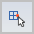

Grid Options dialog box
All options on the dialog box can be set independently of the others.
- Show Readouts
-
Displays the X and Y coordinate values adjacent to the cursor.
Note:Coordinate readout colors are determined by the Highlight and Select color settings on the Colors page of the Solid Edge Options dialog box.
- Show Grid
-
Displays the grid.
Note:You also can use the Show Grid command on the ribbon to turn the grid on and off.
- As Lines
-
Displays the grid as major and minor lines.
- As Points
-
Displays the grid as major and minor points.
- Show Alignment Lines
-
Displays the X and Y alignment lines attached to the cursor.
Note:Alignment line colors are determined by the Highlight and Select color settings on the Colors page of the Solid Edge Options dialog box.
- Snap To Grid
-
Specifies that the cursor will snap to the grid rather than the exact position of the cursor. If IntelliSketch recognizes a keypoint, the keypoint takes precedence.
Use this option to draw to the exact grid coordinates.
- Using Lines
-
Specifies that the cursor will snap to the nearest grid line when the cursor is within the cursor locate zone.
- Using Points
-
Specifies that the cursor will snap to the nearest intersection of two grid lines.
Note:You also can use the Snap to Grid command

on the ribbon to apply snap-to-grid. - Enable Key-ins (X,Y)
-
Displays X and Y data entry boxes in the lower-left corner of the graphics window. When a 2D drawing command is selected, you can use these boxes to enter X and Y coordinates for the next point you click in the graphics window. The values are absolute coordinate distances from the grid origin.
Note:You also can use the XY Key-in command on the ribbon to display and use the X and Y boxes.
- Angle
-
Specifies the angle of the grid, so you can rotate the grid to the angle you want.
Note:This option is not available in synchronous modeling environments.
- Major Line Spacing
-
Specifies the distance between the major lines.
- Minor Spaces Per Major
-
Specifies the number of minor spaces between the major lines.
- Major Line Color
-
Specifies the color of the major lines.
- Minor Line Color
-
Specifies the color of the minor lines.